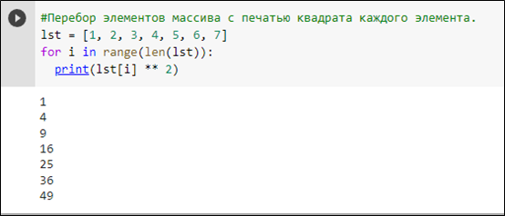
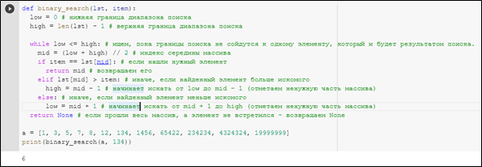
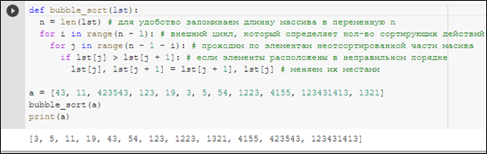
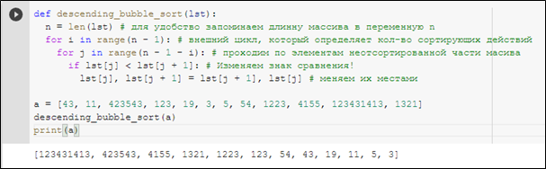
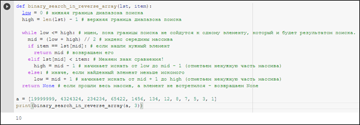

Алгоритмы обработки массивов
План-конспект урока:
- Тема урока: Алгоритмы обработки массивов на языке программирования Python
- Цели и задачи урока:
- Образовательные: познакомить школьников с понятием «массив», сформировать представление и научить применять алгоритмы обработки массивов.
- Развивающие: развить у детей логическое, алгоритмическое и абстрактное мышление.
- Воспитательные: пробудить у детей интерес к данной теме и ко всему предмету информатики в целом.
- Этапы урока:
- организационный
- этап усвоения новых знаний
- первичное закрепление темы
- практическая часть
- обобщение полученных знаний и подведение итогов
- Ход урока:
- Организационный этап. Учитель приветствует учеников и даёт им немного времени для того, чтобы подготовить рабочее место и настроиться на урок.
- Этап усвоения новых знаний. УУчитель объясняет новую тему: даёт определение понятия массива. Затем, учитель рассказывает о простейших алгоритмах, которые используются для обработки массивов, показывает их реализацию на языке программирования Python. Учителю необходимо обратить внимание учеников на ресурсы, затраченные в процессе выполнения того или иного алгоритма и затронуть понятие асимптотики алгоритмов. Далее, для лучшего усвоения знаний учитель решает несколько задач, связанных с обработкой массива, и разъясняет решения. Дети ведут конспект и записывают ключевые моменты урока.
- Первичное закрепление знаний. Учитель задаёт ученикам устные вопросы по теме. Если ученики затрудняются на них ответить, учитель возвращается к объяснению темы.
- Практическая часть. Учитель предлагает детям решить несколько задач, и в случае возникновения сложностей помогает их разрешить.
- Обобщение полученных знаний и подведение итогов. Учитель кратко повторяет основные моменты урока, оценивает результат выполнения практических задач и задаёт домашнее задание.
Теоретический материал
Перед непосредственным рассмотрением алгоритмов обработки массивов стоит разобраться, что же такое массив, а также кратко познакомиться с особенностями их использования в языке программирования Python.
Массив – это структура данных, содержащая набор значений (элементов массива), к каждому из которых можно обратиться по уникальному индексу. Все элементы массива должны содержать значения одного и того же типа (например, целое число или строка). Рассмотрим, как же устроены массивы в языке программирования Python.
Стоит сразу отметить, что для работы с массивами в классическом понимании в Python существует специальная библиотека array, однако, речь пойдёт не о них, а о встроенном типе данных, который в Python называется list (список). Сразу стоит отметить, что как утверждают разработчики языка программирования Python с точки зрения внутреннего устройства списки в Python больше похожи на массивы в классическом понимании, нежели на сами списки. Это выражается в том, что доступ к элементу по индексу осуществляется за O(1), а основные затраты ресурсов связаны с вставкой или удалением элементов массива, а также выходы за пределы текущего размера выделенной памяти. Однако, в отличие от классического массива, списки в Python могут содержать элементы разных типов, то есть вполне допустим список [1, 2, 3, ‘string’] или даже [1, 2, 3, [4, 5]]. В последнем случае, если вызвать встроенную функцию len, которая возвращает количество элементов массива, будет возвращён результат 4. Действительно, первые три элемента массива – это просто целые цифры, а 4-ый элемент массива представляет собой массив.
Далее, в силу вышеизложенных особенностей, в контексте использования Python понятия массив и список будут считаться эквивалентными и подразумевать под собой встроенный в Python тип данных list.
Для того, чтобы инициализировать (или объявить) массив в Python достаточно переменной присвоить значение «[]», например так: «lst = []». Таким образом будет инициализирован пустой список. Стоит отметить, что интерпретатор языка сам позаботится о выделении необходимой памяти, при этом, можно будет спокойно добавлять элементы в массив. Такой массив в программировании называют динамическим, так как его размер может изменяться прямо во время выполнения программы. Альтернативный способ создания массива выглядит так: lst = list(). Этот способ полностью эквивалентен предыдущему и на выходе также создаётся пустой массив.
Так как основная задача познакомить обучающихся с алгоритмами, а не с самим языком Python, на данном этапе не рационально знакомить учеников со встроенными функциями обработки массива (в конечном итоге, цель изучения алгоритмов обработки массивов состоит в том, чтобы обучающиеся сами смогли реализовать часть этих методов и, что более важно, понимали, как эти методы устроены и сколько ресурсов используется при их выполнении), однако, чтобы сильно не зацикливаться на совсем уж элементарных и тривиальных вещах, стоит упомянуть, что функция len – принимает один параметр, имя переменной, которая содержит массив и возвращает целое число – количество его элементов. Также, стоит отметить, что для доступа к элементу массива используется следующий синтаксис: lst[i], где lst – имя переменной, содержащей массив, а i – индекс необходимого элемента. В случае обращения к несуществующему элементу интерпретатор выдаст соответствующую ошибку и работа программы будет прервана. Важно уточнить, что индексация массива начинается с 0, а заканчивается len(lst) – 1. То есть первый элемент массива будет иметь индекс 0, а последний – индекс, равный количеству элементов в массиве минус 1.
Чтобы пройтись по всем элементам массива в цикле, в языке Python используется следующая конструкция: «for i in range(len(lst)):», где i – переменная-счётчик, которая будет проходить по всем индексам в массиве, а функция range(len(lst)) генерирует последовательность чисел от 0 до len(lst) не включительно. На рисунке: представлен пример использования цикла for для работы с массивом:
Задачи для объяснения
Теперь перейдём к рассмотрению основных задач, которые возникают при работе с массивами. Так как массивы используются для хранения большого объёма данных, то один из самых актуальных вопросов при работе с массивом это поиск элемента в массиве по значению. На первый взгляд, задача поиска нужного значения в массиве решается элементарно: с помощью цикла for проходимся по всем элементам массива и сравниваем значение элемента массива и искомым значением, если эти два значения совпадают – прерываем цикл и возвращаем индекс, который соответствовал найденному значению (важно помнить, что в элемент в i-ой позиции соответствует i-1-му индексу). Такой способ действительно подходит, когда речь идёт о массиве небольшого размера. На практике, часто приходится обрабатывать массивы с миллионами и десятками миллионов элементов. Если в таком случае будет осуществляться поиск элемента, которому необходимо перебирать все элементы массива, то программа получится очень медленной. Если же учесть, что, зачастую, в рамках одной программы поиск в массиве необходимо осуществлять не один раз – проблема становится действительно актуальной. Существует ли способ как-нибудь ускорить процесс поиска? Ответ на этот вопрос – да. Этот способ, а точнее алгоритм называется бинарный поиск. Сразу стоит отметить, что использовать бинарный поиск допустимо только в том случае, если работа происходит с отсортированным в порядке возрастания массивом. О том, какие способы сортировки массива существуют и как их реализовать будет рассказано ниже, а сейчас рассмотрим, что из себя представляет бинарный поиск. Представим, что у нас уже есть отсортированный массив, состоящий из миллиона элементов, который представляет собой телефонную книгу с фамилиями. Нам необходимо найти некоторую фамилию в этом массиве. Нам известно, что фамилия начинается с буквы «К». Если бы столкнулись с такой задачей в реальной жизни, стали бы мы перебирать все фамилии в телефонной книге по порядку? Конечно нет. Мы бы начали поиск с середины телефонной книги, ведь буква «К» скорее встретится нам там, чем в самом начале. В этом и есть основная суть бинарного поиска. Мы как бы разделяем наш массив пополам и смотрим какой элемент стоит в середине. Если элемент больше искомого, нас интересует левая половина массива, а если меньше – правая. И так, узнав, в какой половине наш элемент, мы можем начинать искать его только в ней, а другую половину попросту отбросить. Именно поэтому нам так важно, чтобы массив был отсортирован в порядке возрастания. Затем мы продолжаем действовать аналогичным образом, только вместо первоначального массива берём подходящую нам половину в качестве исходного массива и разделяем пополам уже её. Можно заметить, что действуя таким образом, в случае массива, состоящего из миллиона элементов, уже после первой итерации мы отбросим половину элементов и будем работать с массивом, который в два раза меньше. И далее, на каждой итерации, будет отбрасываться половина элементов и диапазон поиска будет сокращаться вдвое. Именно поэтому такой поиск называется бинарный. Пример реализации функции, которая выполняет бинарный поиск с подробными разъяснениями представлен на рисунке:
Как упоминалось ранее, для того чтобы использовать быстрый и эффективный бинарный поиск необходимо, чтобы элементы массива были отсортированы в порядке возрастания (строго говоря, элементы могут быть отсортированы и в порядке убывания, однако, в таком случае придётся вносить правки в алгоритм поиска). Для того, чтобы осуществить сортировку массива существует множество способов. Одним из самых распространённых и простых (однако не самым эффективным) является так называемая сортировка пузырьком. Она относится к квадратичным сортировкам, так как её асимптотика равна O(n2). Реализуется сортировка методом пузырька предельно просто. Сортирующее действие следующее: в цикле проходим по элементам массива и попарно сравниваем элементы. Если среди двух соседних элементов наибольший находится левее, то мы меняем эти два элемента местами. В следствии одного такого прохода, мы получаем ситуацию, когда самый большой элемент массива оказывается в конце, что нам и нужно. Так как элементов у нас len(lst), то нам нужно будет выполнить len(lst)-1 такой проход, так как последний элемент, то есть самый маленький, автоматически окажется на своём месте. Заметим, что так как после первого прохода по массиву наибольший его элемент оказывается в конце, нам не обязательно каждый раз доходить до конца массива, попарно сравнивая элементы, а можно каждый раз сокращать проход на номер текущего прохода.
Итак, с помощью двух вложенных циклов мы осуществляем сортировку. Внешний цикл должен выполняться len(lst) – 1 раз, а внутренний len(lst) – 1 – i, где i – индекс внешнего цикла.
Внутренний цикл проходит по элементам от первого (то есть от элемента, с индексом 0) до len(lst) – 1 – i-го элемента, попарно сравнивая элементы и в случае необходимости переставляя их местами. На рисунке представлен пример реализации сортировки пузырьком с разъяснениями:
При необходимости, вышеописанный алгоритм можно усовершенствовать, добавив выход из внешнего цикла при условии, что в процессе выполнения внутреннего цикла не было ни одного обмена [16, с. 7].
Задачи для самостоятельного решения
В качестве первой задачи для самостоятельного решения предлагается изменить алгоритм бинарной сортировки так, чтобы сортировка производилась в порядке убывания. Если дети поняли, как работает сортировка пузырьком, им будет достаточно просто понять, что для того, чтобы отсортировать массив в порядке убывания, достаточно просто изменить знак с «>» на «<». На рисунке показано, как в таком случае будет выглядеть сортировка пузырьком:
Второй задачей для самостоятельного решения будет задача, которая предлагает изменить функцию бинарного поиска так, чтобы она корректно работала с массивом, отсортированным в порядке убывания. Для того, чтобы осуществить такой поиск, необходимо понять, что достаточно всего лишь отбрасывать другую часть массива, то есть если искомый элемент больше текущего среднего элемента, нам надо продолжать поиск не в правой части массива, как это было ранее, а в левой. Чтобы добиться такого поведения нашей функции, достаточно всего лишь изменить знак сравнения с «>» на «<» в конструкции elif. Так как после elif мы использовали else, обработка противоположного случая произойдёт сама собой. Пример переработанной функции, которая осуществляет бинарный поиск в массиве, отсортированном в порядке убывания, представлен на рисунке:
В этом блоке было рассмотрено понятие «массив», указаны особенности реализации и работы с массивами в языке программирования Python, представлен необходимый теоретический материал по данной теме, а также предложены задачи для объяснения темы, в которых были рассмотрены наиболее часто встречающиеся алгоритмы для обработки массивов, а именно бинарный поиск и сортировка методом пузырька, и задачи для самостоятельного решения, которые помогают закрепить изученные ранее алгоритмы, а заодно проверяют, как ученики их поняли.